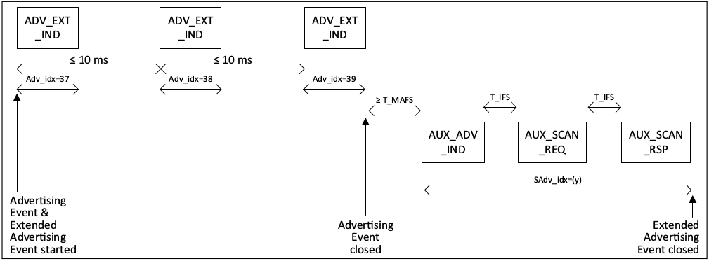

本文介绍了蓝牙中设备发现与连接的机制。包括 BR/EDR， BLE 4.2 和 BLE 5.0。
BR/EDR
Page
Role
- master : 表示 paging 设备，连接后作为 master。
- slave : 表示 page scanning 设备，连接后作为 slave。
- master slave 已经被 Bluetooth SIG 弃用，由 Central Peripheral 取代， 本文暂不更改。
Page substates
| Step | Message | Packet Type | Direction | Hopping Sequence | Access Code and Clock |
|---|---|---|---|---|---|
| 1 | Page | ID | Master to slave | Page | Slave |
| 2 | First slave page response | ID | Slave to master | Page response | Slave |
| 3 | Master page response | FHS | Master to slave | Page | Slave |
| 4 | Second slave page response | ID | Slave to master | Page response | Slave |
| 5 | 1st packet master | POLL | Master to slave | Channel | Master |
| 6 | 1st packet slave | Any type | Slave to master | Channel | Master |
paging procedure
- Page
master 需要发送 page 包并与 slave 在同一信道上才能完成 paging 操作，master 会每秒跳频 3200 次，即每个 slot 两次，每次耗时 68 μs， 第一次在
CLK0 = 0的时候开始， 第二次在CLK0 = 1的时候开始。在每个 TX slot，master 需要在两个不同频段（
f(k)和f(k+1)）发送 ID 包。在每个 RX slot，master 需要在f'(k)和f'(k+1)上监听回复, 并留出 ±10μs 的误差时间。图 1.page
- First slave page response
当 slave 收到 master 的 page 包， 则会在收包开始 625μs 后发送 first slave page response，并在发包开始 312.5μs 后（提前 10μs 的误差时间）开始接收 master page response。
若 slave 收到的是第一个 page 包，则其会在发包开始 625μs 后收到 master page response，如图 2；否则会在发包开始 312.5μs 后收到，如图 3。
- Master page response
当 mster 收到 first slave page response， 会在下一个 slot 的开始处发送 Master page response。并在之后的一个 slot 处开始接收 second slave page response。
- Second slave page response
当 slave 收到 master page response, 会在收包开始 625μs 后发送 second slave page response。并切换至 master access code 和 basic channel hopping sequence。在此之前双方使用的是 slave access code 和 page hopping sequence。
- 1st packet master
当 master 收到 second slave page response 后，会切换至 master access code 和 basic channel hopping sequence，并在下一个 slot 发送 1st packet master。
- 1st packet slave
当 slave 收到 1st packet master 后，会在下一个 slot 发送 1st packet slave。
Inquiry
Role
- master : 表示 inquiring 设备。
- slave : 表示 inquiry scanning 设备。
- master slave 已经被 Bluetooth SIG 弃用，由 Central Peripheral 取代， 本文暂不更改。
Inquiry substates
| Step | Message | Packet Type | Direction | Hopping Sequence | Access Code and Clock |
|---|---|---|---|---|---|
| 1 | inquiry | ID | Master to slave | inquiry | inquiry |
| 2 | inquiry response | FHS | Slave to master | inquiry response | inquiry |
| 3 | extended inquiry response | DM1/DM3/DM5 DH1/DH3/DH5 |
Slave to master | inquiry response* | inquiry |
* The extended inquiry response packet is sent on the same frequency as the inquiry response (FHS) packet.
Inquiring procedure
- Inquiry
同 page
- Inquiry response
当 slave 收到 master 的 inquiry 包，则会在收包开始 625μs 后发送 inquiry response。里面包含了一些被 paging 的必要信息。
- extended inquiry response
如果 slave 要发 extended inquiry response 包，则会在收包开始 1250μs 后发送。该包的发送频段和 inquiry response 相同。
BLE 4.2
ADV
ADV channel
ADV 使用 37(k = 0),38(k = 12),39(k = 39) 三个信道。
f=2402+k*2 MHz, k=0, … ,39
ADV interval
ADV 为了提高时间上的随机性，保证被 scan 到的概率，增加了随机 Delay的机制。延迟时间为 0ms 至 10ms 间的随机值。
ADV PDUs
- ADV_IND
Payload 部分包括 6 octects 的地址和 0-31 octets 的广播数据。
- ADV_DIRECT_IND
Payload 部分包括 6 octects 的地址和 6 octets 的目标地址。
- ADV_NONCONN_IND
Payload 部分包括 6 octects 的地址和 0-31 octets 的广播数据。
- ADV_SCAN_IND
Payload 部分包括 6 octects 的地址和 0-31 octets 的广播数据。
ADV event type
| Advertising Event Type | PDU used in this advertising event type | Allowable response PDUs for SCAN_REQ | Allowable response PDUs for CONNECT_REQ |
|---|---|---|---|
| Connectable Undirected Event | ADV_IND | YES | YES |
| Connectable Directed Event | ADV_DIRECT_IND | NO | YES* |
| Non-connectable Undirected Event | ADV_NONCONN_IND | NO | NO |
| Scannable Undirected Event | ADV_SCAN_IND | YES | NO |
* Only the correctly addressed initiator may respond.
Connectable Undirected Event
设备发送两个 ADV 的时间间隔需要小于等于 10ms。
设备发送 ADV_IND 后需要在同一个信道监听 SCAN_REQ 和 CONNECT_REQ。
如果听到一个包含自己地址的 SCAN_REQ， 设备需要在同一信道上回复 SCAN_RSP。并进入下一个可用的广播信道或者结束广播事件，如图 7。
如果听到一个包含自己地址的 CONNECT_REQ，设备需要退出广播状态并进入连接状态，如图 8。
否者设备需要进入下一个可用的广播信道或者结束广播事件，如图 6。
图 6.ADV without request
图 7.ADV with scan request
图 8.ADV with connect request
Connectable Directed Event
- Low Duty Cycle Directed Advertising
- 设备发送两个 ADV 的时间间隔需要小于等于 10ms。
- High Duty Cycle Directed Advertising
- 设备发送两个相同信道上的 ADV 的时间间隔需要小于等于 3.75ms。
- 设备需要在 1.28s 内退出该状态。
设备需要忽略收到的 SCAN_REQ 和非指定设备的 CONNECT_REQ。
其余行为同 Connectable Undirected Event。
- Low Duty Cycle Directed Advertising
Non-connectable Undirected Event
设备发送 ADV_NONCONN_IND 后，不进行监听操作就进入下一个可用的广播信道或者结束广播事件。
其余行为同 Connectable Undirected Event。
Scannable Undirected Event
设备需要忽略收到的 CONNECT_REQ。
其余行为同 Connectable Undirected Event。
Scan
Interval & Window
设备需要在每个 Interval 上监听广播，时长为 Window。
在每个 Window，设备需要在不同的广播信道进行监听。
Scan PDUs
- SCAN_REQ
Payload 部分包括 6 octects 的 scanner’s device address 和 6 octets 的 advertiser’s device address。
- SCAN_RSP
Payload 部分包括 6 octects 的地址和 0-31 octets 的广播数据。
passive
设备只收广播包，不发送任何包。
active
设备根据收到的广播包，决定是否发送 SCAN_REQ。只有收到 ADV_IND 和 ADV_SCAN_IND 时才可能会发送。
设备至少对每个符合条件的广播者放松一个 SCAN_REQ， 若没有收到 SCAN_RSP，则应该继续发送。
为了防止重复收到同一个设备的 SCAN_RSP，采用 backoff procedure 机制。
Initiating
设备收到 ADV_IND 或者目标地址是自己的 ADV_DIRECT_IND， 则会发送 CONNECT_REQ， 并且退出 Initiating state 进入 Connection state。
Initiating PDUs
- CONNECT_IND
Payload 部分包括 6 octects 的 scanner’s device address 和 6 octets 的 advertiser’s device address，以及 22 octets 的 LLData。
LLData 中包含了用于连接的 WinSize, WinOffset, Interval, Latency, Timeout 等参数。
Connection
当 initiator 发送 CONNECT_REQ 后，会作为 master 进入 Connection state，如图 9。
当 advertiser 收到 CONNECT_REQ 后，会作为 slave 进入 Connection state，如图 10。
* \ master slave 已经被 Bluetooth SIG 弃用，由 Central Peripheral 取代， 本文暂不更改。**
当进入 Connection state 后， 该连接则被认为被 created。
当成功收到对方的连接包（data channel packet）后，该连接才被认为被 established。
connection is created 和 connection is established 的唯一区别是 connection supervision timeout 不同，前者为 6 个 interval，后者为较大值。
BLE 5.0
ADV
ADV channel
- primary advertising channel
ADV 使用 37(k = 0),38(k = 12),39(k = 39) 三个信道。
f=2402+k*2 MHz, k=0, … ,39 - secondary advertising channel
可在任意信道，由上级广播指定。
ADV events & Externded ADV events
- ADV events
同 BLE 4.2
- Externded ADV events
次广播的开始时间，信道和使用的 PHY 等由上级广播指定，如图 11。
Externded ADV events 和对应的 ADV events 同时开始。在最后一个 PDU 后结束， 如图 12。
auxiliary advertising segments 在 AUX_ADV_IND 发送处开始，在最后一个 PDU 后结束，如图 13。
多个 Externded ADV events 可能会相互重叠，因为多个ADV_EXT_IND可以指向同一个AUX_ADV_IND，如图 12；或者 另一个 ADV 插在了ADV_EXT_IND和AUX_ADV_IND之间，如图 13。
ADV PDUs
- ADV_IND
Payload 部分包括 6 octects 的地址和 0-31 octets 的广播数据。
- ADV_DIRECT_IND
Payload 部分包括 6 octects 的地址和 6 octets 的目标地址。
- ADV_NONCONN_IND
Payload 部分包括 6 octects 的地址和 0-31 octets 的广播数据。
- ADV_SCAN_IND
Payload 部分包括 6 octects 的地址和 0-31 octets 的广播数据。
- ADV_EXT_IND
使用
Common Extended Advertising Payload Format。
可用在除connectable and scannable undirected之外的所有 advertising events。
其中包含 3 octets 的AUX Ptr，AUX Ptr指定了次广播的信道，时间，使用的 PHY 等信息。 - AUX_ADV_IND
格式上与
ADV_EXT_IND相同。 - AUX_SYNC_IND
格式上与
ADV_EXT_IND相同。
用作周期性广播，如图 14 。
同一个周期性广播的两个 event 不能重叠。 - AUX_CHAIN_IND
格式上与
ADV_EXT_IND相同。
用作hold additional AdvData。
上级广播为AUX_ADV_IND,AUX_SYNC_IND,AUX_SCAN_RSP或者另一个AUX_CHAIN_IND。
ADV event type
connectable and scannable undirected event
同 BLE 4.2 的 Connectable Undirected Event
connectable directed event
可能会使用 ADV_DIRECT_IND 或者 ADV_EXT_IND 中的一个。
使用 ADV_DIRECT_IND 时和 BLE 4.2 的 Connectable Directed Event 相同。
当使用 LE Coded PHY 时，必须选择 ADV_EXT_IND。
ADV_EXT_IND 中的 AUX Ptr 字段指向 AUX_ADV_IND，AUX_ADV_IND 中包含了广播地址和目标地址。
设备需要在发送 AUX_ADV_IND 后监听同一广播次信道上的 AUX_CONNECT_REQ。若收到来自目标地址的 AUX_CONNECT_REQ， 则会在同一广播次信道上回复 AUX_CONNECT_RSP。
图 16.Connectable directed advertising event using ADV_EXT_IND PDUs
non-connectable and non-scannable undirected event
可能会使用 ADV_NONCONN_IND 或者 ADV_EXT_IND 中的一个。
使用 ADV_NONCONN_IND 时和 BLE 4.2 的 Non-connectable Undirected Event 相同。
ADV_EXT_IND 包中不包含广播地址，其中的 AUX Ptr 字段指向 AUX_ADV_IND;或者 ADV_EXT_IND 包中包含广播地址，不包含 AUX Ptr 并没有 AUX_ADV_IND。
AUX_ADV_IND 后可以跟 AUX_CHAIN_IND，如图 17。
图 17.Non-connectable and non-scannable undirected advertising event
scannable undirected event
可能会使用 ADV_SCAN_IND 或者 ADV_EXT_IND 中的一个。
使用 ADV_SCAN_IND 时和 BLE 4.2 的 Scannable Undirected Event 相同。
ADV_EXT_IND 包中不包含广播地址，其中的 AUX Ptr 字段指向 AUX_ADV_IND。
设备需要在发送 AUX_ADV_IND 后监听同一广播次信道上的 AUX_SCAN_REQ。若收 AUX_SCAN_REQ， 则会在同一广播次信道上回复 AUX_SCAN_RSP。

图 18.Scannable undirected advertising event with ADV_EXT_IND PDUs
connectable undirected event
除了不指定目标地址外，其余的和 BLE 5.0 connectable directed event 中的使用 ADV_EXT_IND 部分相同。
不能像 BLE 4.2 一样单纯的使用非 Common Extended Advertising Payload Format 的包。non-connectable and non-scannable directed event
除了指定目标地址外，其余的和 BLE 5.0 non-connectable and non-scannable undirected event 中的使用 ADV_EXT_IND 部分相同。
不能像 BLE 4.2 一样单纯的使用非 Common Extended Advertising Payload Format 的包。scannable directed event
除了指定目标地址外，其余的和 BLE 5.0 scannable undirected event 中的使用 ADV_EXT_IND 部分相同。
不能像 BLE 4.2 一样单纯的使用非 Common Extended Advertising Payload Format 的包。
ADV Sets
- ADV Set 为一组相同参数的广播包，可交错发送。设备还可能支持多组不同参数的 ADV Sets。
- ADV Set 由 ADI 域中的 SID 子域区分。
- 每个 ADV Set 必须包含至少 31 字节的广播数据。该限制在 Host 第一次指定该 Set 的广播数据或者创建另一个 ADV set 后无效。
1
The guarantee shall no longer apply after the Host first specifies advertising data for that set or creates another advertising set.
- 如果该 ADV Set 是 scannable，则该 ADV Set 必须包含至少 31 字节的 scan response data。该限制该 ADV Set 为 non-scannable 或者在 Host 第一次指定该 Set 的广播数据或者创建另一个 ADV set 后无效。
1
The guarantee shall no longer apply if the set is made non-scannable or after the Host first specifies scan response data for that set or creates another advertising set.
- AdvDataInfo (ADI)
- 用来区分 ADV Sets 和其中的重复广播数据包。
- 每个 ADV Set 的 DID 是一个随机值，当 HOST 向 ADV Set 提供一个 advertising data 或者 scan response data， ADI 将会被更新为新的随机值。
- 当一个周期性广播加入或者移除，DID 不被强制要求更新，但不更新会导致该周期性广播被扫描者忽略。
Scan
Scan PDUs
- SCAN_REQ
Payload 部分包括 6 octects 的 scanner’s device address 和 6 octets 的 advertiser’s device address。
- SCAN_RSP
Payload 部分包括 6 octects 的地址和 0-31 octets 的广播数据。
- AUX_SCAN_REQ
同
SCAN_REQ。 - AUX_SCAN_RSP
使用
Common Extended Advertising Payload Format。
passive
设备只收广播包，不发送任何包。
active
设备根据收到的广播包，决定是否发送 SCAN_REQ 和 AUX_SCAN_REQ。如图 15。
设备至少对每个符合条件的广播者放松一个 SCAN_REQ， 若没有收到 SCAN_RSP，则应该继续发送。
为了防止重复收到同一个设备的 SCAN_RSP，采用 backoff procedure 机制。
Scanning for ADV Set
可根据收到的 ADV_EXT_IND 中的 ADI 域里的 SID 来区分包是不是来自同一个 ADV Set。
Scanning for periodic advertisements
根据 AUX_ADV_IND 中的 SyncInfo 字段判断 advertising synchronization information 是否完整，若完整后则起一个新的状态机跳至 Synchronization State 并接收 AUX_SYNC_IND 和 AUX_CHAIN_IND。旧状态机依旧保持在 Scanning State。
Initiating
设备在主广播信道上进行扫描，并根据收到的包可能会跳至次广播信道进行扫描。
设备根据收到的包，如图 15, 可能会发送 CONNECT_REQ ，并且退出 Initiating state 进入 Connection state；也可能会发送 AUX_CONNECT_REQ， 并在收到 AUX_CONNECT_RSP 后退出 Initiating state 进入 Connection state。
Initiating PDUs
CONNECT_IND
Payload 部分包括 6 octects 的 scanner’s device address 和 6 octets 的 advertiser’s device address，以及 22 octets 的 LLData。
LLData 中包含了用于连接的 WinSize, WinOffset, Interval, Latency, Timeout 等参数。AUX_CONNECT_REQ
同
CONNECT_IND。AUX_CONNECT_RSP
使用
Common Extended Advertising Payload Format。